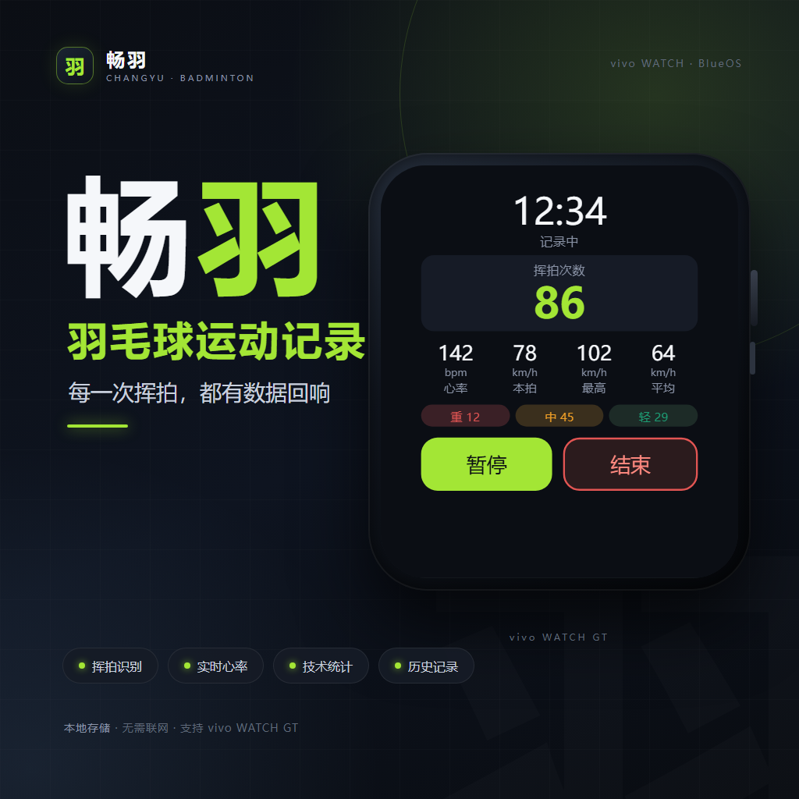
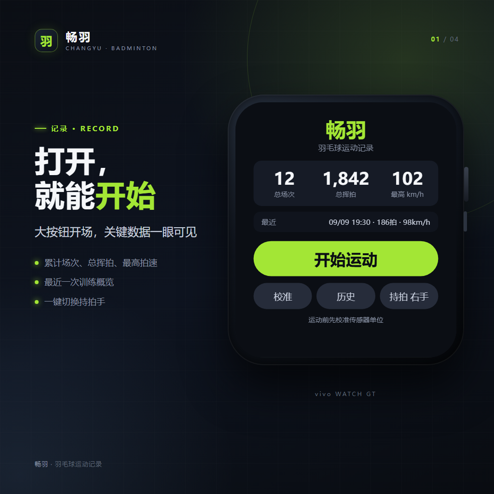
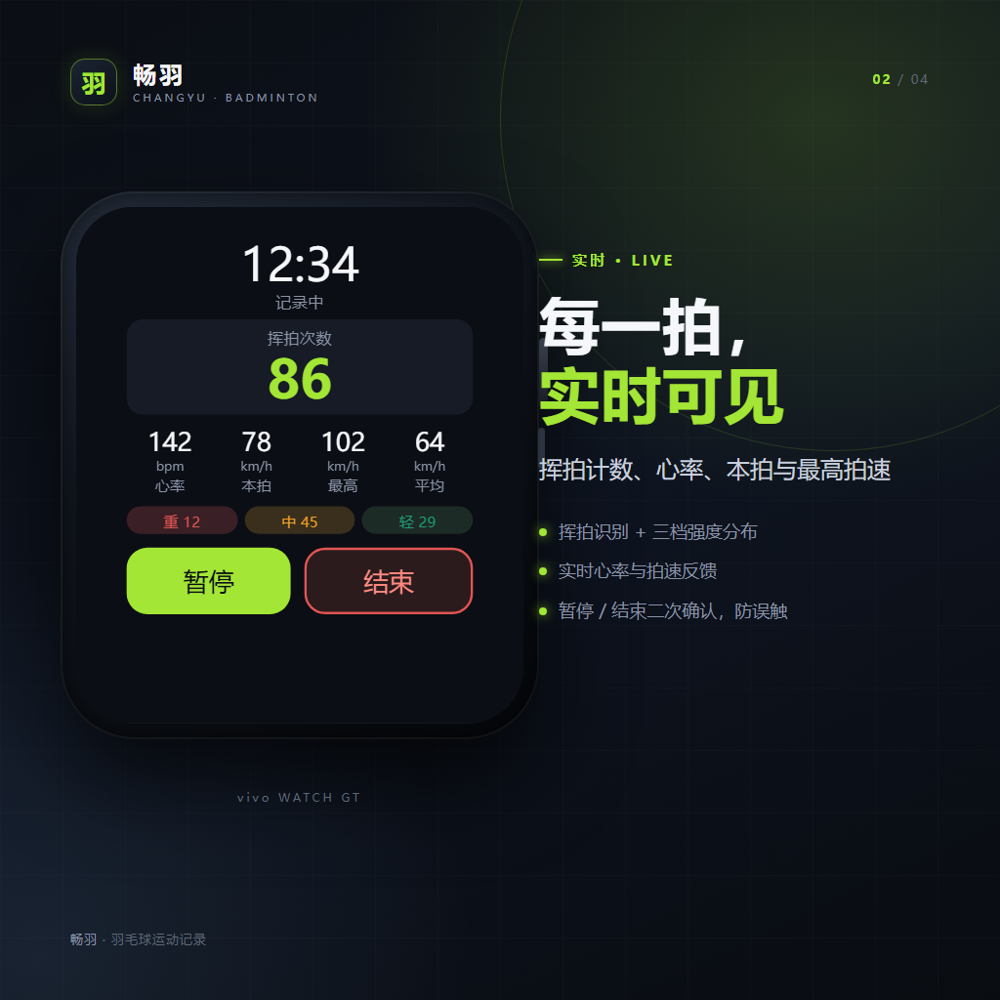
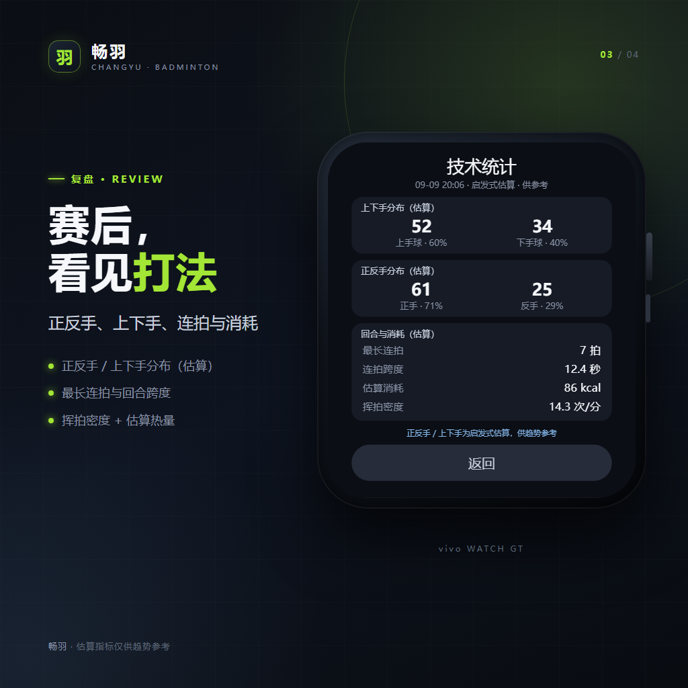
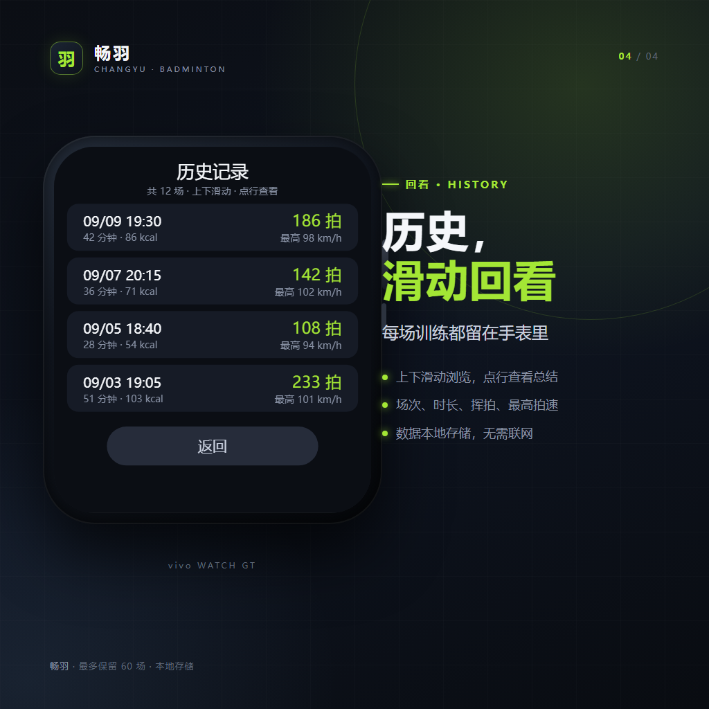

BADMINTON TRACKER · BLUEOS
每一次挥拍，
都有数据回响
面向 vivo WATCH 的羽毛球运动记录应用。自动识别挥拍，实时记录心率与拍速，赛后复盘正反手、上下手与最长连拍。

一块表，完成记录与复盘
从开始运动到赛后技术统计，全流程在手表本地完成。

首页开始运动

实时记录挥拍 · 心率 · 拍速

技术统计正反手 · 上下手

历史记录滑动回看
为羽毛球场景设计
不是通用运动计步，而是围绕挥拍与回合的技术记录。
01
挥拍识别
IMU 峰值 + FWHM 双判据，过滤走路、捡球、擦汗等宽波形。
02
实时数据
挥拍数、心率、本拍 / 最高 / 平均拍速，暂停与结束二次确认。
03
赛后总结
时长、三档强度、杀球 / 高远 / 吊球占比、心率与估算消耗。
04
技术统计
正反手、上下手分布，最长连拍与回合跨度，看见自己的打法。
05
历史记录
原生列表上下滑动，点行查看对应场次总结，最多保留 60 场。
06
本地优先
不联网、无账号、无广告；心率与运动数据只留在手表本地。
技术实现
BlueOS .ux + JavaScript，全部运行在手表端。
检测与估算
- 50Hz IMU 采样，直接取峰值；抛物线重建与平滑被验证为负优化
- FWHM ≤100ms 过滤日常动作，降低误检
- 重力 EMA + 腕部轴向特征估算正反手 / 上下手
- 相邻挥拍间隔 ≤4s 计为同一回合，输出最长连拍
- MET / 心率粗估热量，仅用于纵向比较
工程与数据
- 页面：Home / 校准 / Recording / Summary / SummaryDetail / History
- 本地 K-V 存储场次与历史，最多 60 场
- 运动期间保持屏幕常亮，避免后台冻结传感器
- release RPK + 本地签名，OrbitV 侧载安装
- 可视化 QA 与商店素材位于仓库 docs / store-assets
隐私与边界
只申请完成运动记录所必需的能力。
- 不使用网络，不收集账号、位置、通讯录
- 心率仅用于本场运动展示与统计，不上传
- 原始传感器波形不落盘，仅保存挥拍特征与场次汇总
- 卸载应用会删除手表上的全部本地数据
正反手、上下手、拍速与热量均为腕部传感器估算，仅供趋势参考，不构成专业训练或医疗建议。本应用不是医疗器械，与 vivo 官方无隶属关系。